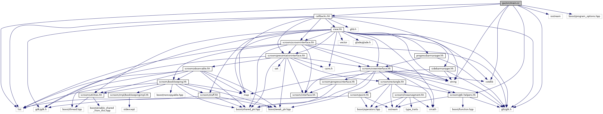

- Generated by
 1.8.13
1.8.13
|
Scroom
0.12.2-1-g43cb4d8
|
#include <cstdlib>#include <iostream>#include <list>#include <string>#include <boost/program_options.hpp>#include <gtk/gtk.h>#include <scroom/gtk-helpers.hh>#include "callbacks.hh"
Go to the source code of this file.
Functions | |
| void | usage (const std::string &me, const po::options_description &desc, const std::string &message=std::string()) |
| int | main (int argc, char *argv[]) |
| int main | ( | int | argc, |
| char * | argv[] | ||
| ) |
Definition at line 40 of file main.cc.
1.8.13